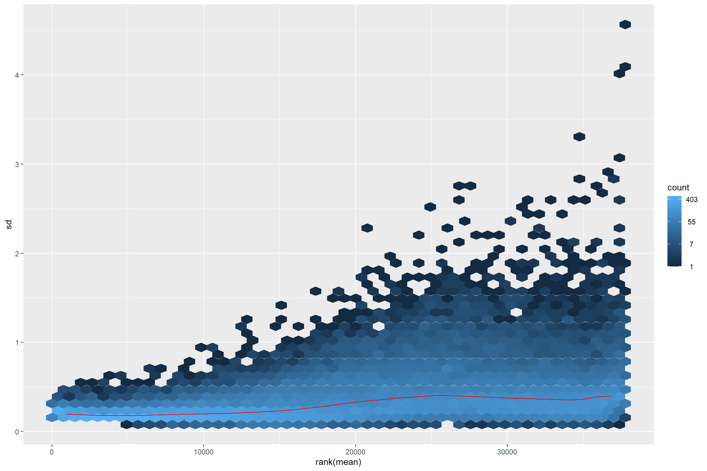
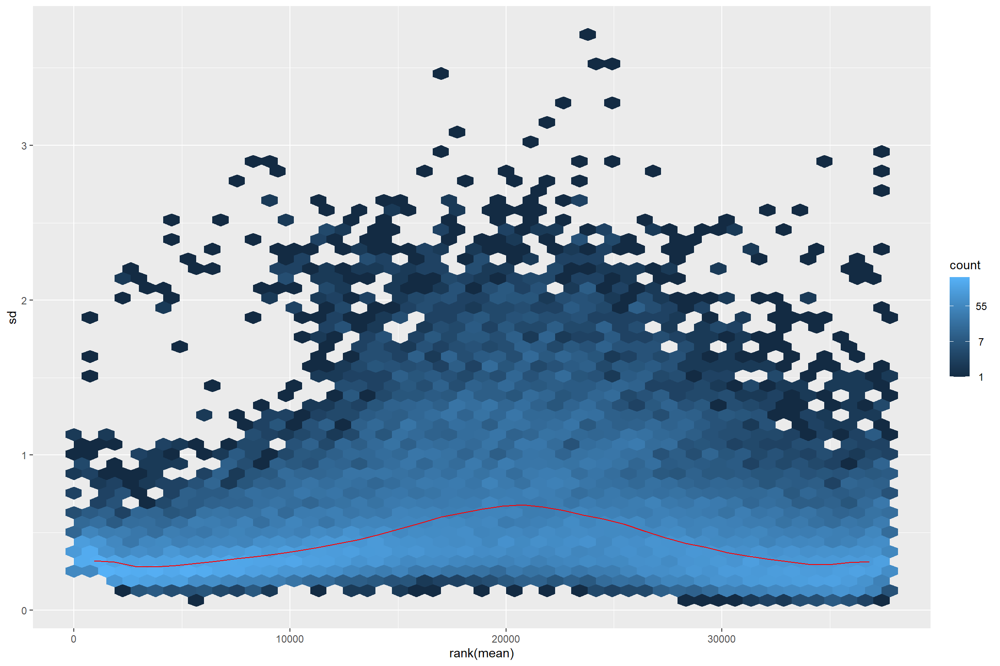
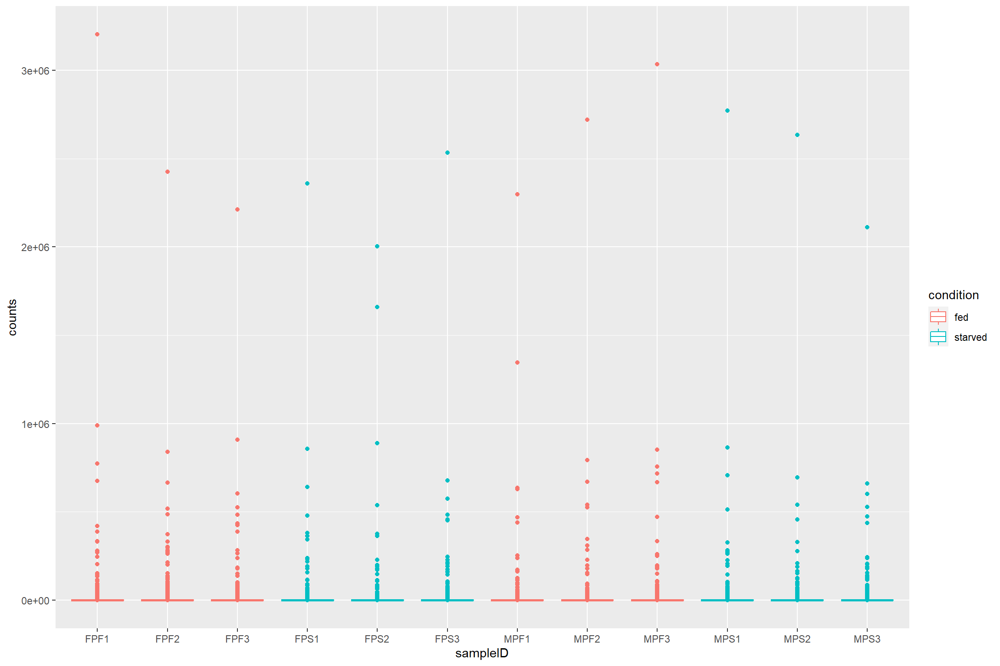
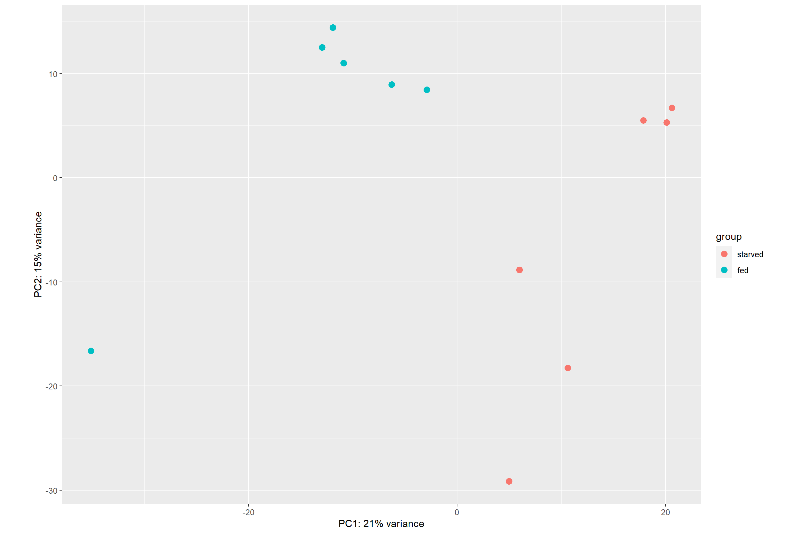
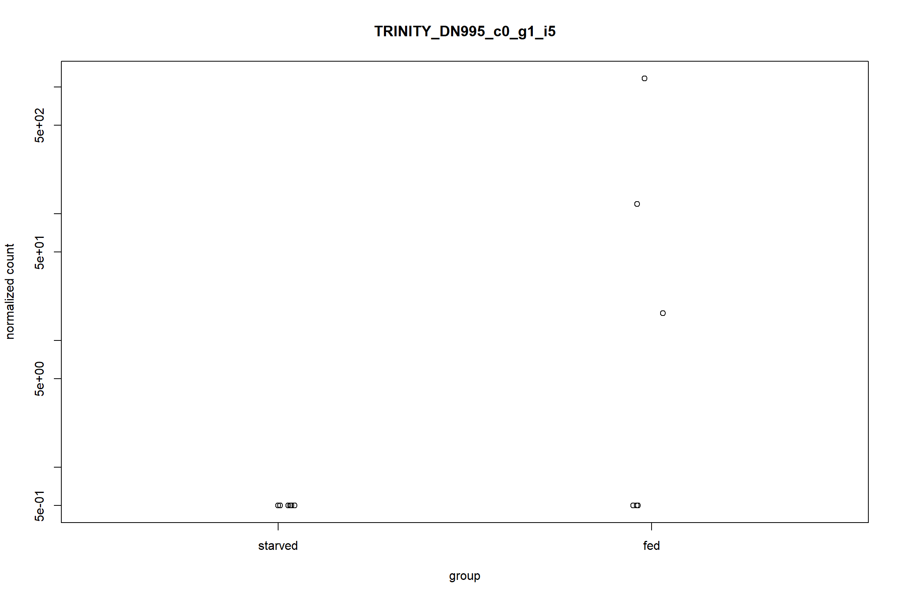

Importing data
Several tools exist for importing RNA-seq “feature counts” generated
from different software into the packages of
Bioconductor.
One of these tools is the tximport package which can
import and summarize transcript-level abundance estimates for
transcript- and gene-level analysis. More information about using
tximport can be found here.
Tutorial data
The data for this tutorial comes from an the salivary glands of 12 N. pustulatus beetles, half of which were starved from 5 days.
| sampleID | gender | condition |
|---|---|---|
| FPF1 | female | fed |
| FPF2 | female | fed |
| FPF3 | female | fed |
| FPS1 | female | starved |
| FPS2 | female | starved |
| FPS3 | female | starved |
| MPF1 | male | fed |
| MPF2 | male | fed |
| MPF3 | male | fed |
| MPS1 | male | starved |
| MPS2 | male | starved |
| MPS3 | male | starved |
Quantification of the data was done with Kallisto. The
ouput of Kallisto produces at least two files per sample:
abundances.tsv and abundances.h5.
This data can be imported directly using tximport as
follows:
library(tximport)
library(magrittr)
library(stringr)
sample_files <- list.files(path = dir,
pattern = '.h5',
recursive = TRUE,
full.names = TRUE)
sample_names <- basename(sample_files) %>%
str_remove(., '.h5')
txi.kallisto <- tximport(files, type = "kallisto", txOut = TRUE)However, due to the size of the .h5 files today we will
be using the dataframe that results of importing the data with
tximport. Both of these datasets can be downloaded from the
tutorial GitHub
repository as follows.
library(readr)
library(dplyr)
count_data <- read_csv(
'https://raw.githubusercontent.com/Coayala/deseq2_tutorial/main/data/kallisto_counts.csv'
) %>%
column_to_rownames(var = 'transcriptID')## Rows: 61290 Columns: 13
## ── Column specification ───────────────────────────────────────────────────────────────────────────────────────────────
## Delimiter: ","
## chr (1): transcriptID
## dbl (12): FPF1, FPF2, FPF3, FPS1, FPS2, FPS3, MPF1, MPF2, MPF3, MPS1, MPS2, MPS3
##
## ℹ Use `spec()` to retrieve the full column specification for this data.
## ℹ Specify the column types or set `show_col_types = FALSE` to quiet this message.metadata <- read_csv(
'https://raw.githubusercontent.com/Coayala/deseq2_tutorial/main/data/metadata.csv'
)## Rows: 12 Columns: 3
## ── Column specification ───────────────────────────────────────────────────────────────────────────────────────────────
## Delimiter: ","
## chr (3): sampleID, gender, condition
##
## ℹ Use `spec()` to retrieve the full column specification for this data.
## ℹ Specify the column types or set `show_col_types = FALSE` to quiet this message.Building the DESeq2 object
As most Bioconductor packages, DESeq2 has
its own custom class (the DESeqDataSet object) to ensure
that all the data needed for the analysis is provided and its in the
correct format.
For example, data imported from other Bioconductor
packages may be contained in a SummarizedExperiment object
as it is commonly used to transfer data between different packages.
In our case, our count data in in a dataframe. So in order to
construct the DESeqDataSet object we can do the
following:
library(DESeq2)
dds <- DESeqDataSetFromMatrix(countData = count_data,
colData = metadata,
design= ~ condition)## converting counts to integer mode## Warning in DESeqDataSet(se, design = design, ignoreRank): some variables in design formula are characters, converting
## to factorsPre-filtering the data set
The count matrix can have many rows (transcripts/genes) for which no counts were found, or that contain too few reads to provide any meaningful information. These reads can be removed to increase the speed of the functions.
A minimal filtering approach will be to remove all the genes/transcripts that have zero counts (< 1), however many other tutorials usually remove any gene/transcript with less than 10 counts as a rule of thumb.
nrow(dds)## [1] 61290keep <- rowSums(counts(dds)) >= 10
dds <- dds[keep,]
nrow(dds)## [1] 37758Setting up your comparisons
One of the most common mistakes during differential expression analysis (DE analysis) is to get confused regarding which comparisons you are making. Is not the same comparing starved/fed than fed/starved. Being unaware of which treatment group is being used as “control” or as a “baseline” may result in mistakes interpreting the data.
A good way of making sure that you are making the comparisons that you intend to, is to explicitly set up which treatment group is your baseline
dds$condition <- relevel(dds$condition, ref = 'starved')Data exploration and visualization
Before performing DE analysis, it is always important to explore and visualize the data to see if there is evidence of differences among the samples, if the replicates track each other, identify potential replicates, or even determine if samples were swapped in the laboratory (more common than you will imagine).
Library size effects
Due to sequencing bias or other technical reasons, there is always going to be differences in the number of reads that were generated for each sample. This in turn can artificially inflate the counts for a particular gene/transcript if raw data were used for the analysis.
First lets plot the number of reads per sample
data.frame(sample = colnames(dds),
lib_size = colSums(assay(dds, "counts")),
condition = dds$condition) %>%
ggplot(aes(x = sample,
y = lib_size,
fill = condition)) +
geom_col() +
labs(x = 'Sample Name',
y = 'Library size')To deal with these differences size factors need to
be calculated and then incorporated in the data to make the counts more
comparable. In the case of DESeq2, the estimated size
factors take into account not only differences in library size, but also
in the composition of RNA. The reason is that during sequencing there is
a limited number of reads that are generated, so highly expressed genes
will consume large part of the reads, leaving other genes with even
lower counts.
dds_e <- estimateSizeFactors(dds)Normalization
Because the idea of DE analysis is to compare the expression of a particular gene/transcript across several samples, the counts among those samples should be made comparable and not an effect of external factors. Several methods for normalizing RNA-seq data have been proposed but not all have passed the test of time.
| Normalization method | Description | Accounted factors | Recommendations for use |
|---|---|---|---|
| CPM<a0>(counts per million) | counts scaled by total number of reads | sequencing depth | gene count comparisons between replicates of the same samplegroup;<a0>NOT for within sample comparisons or DE analysis |
| TPM<a0>(transcripts per kilobase million) | counts per length of transcript (kb) per million reads mapped | sequencing depth and gene length | gene count comparisons within a sample or between samples of the same sample group;<a0>NOT for DE analysis |
| RPKM/FPKM<a0>(reads/fragments per kilobase of exon per million reads/fragments mapped) | similar to TPM | sequencing depth and gene length | gene count comparisons between genes within a sample;<a0>NOT for between sample comparisons or DE analysis |
| DESeq2<92>s<a0>median of ratios<a0>[1] | counts divided by sample-specific size factors determined by median ratio of gene counts relative to geometric mean per gene | sequencing depth and RNA composition | gene count comparisons between samples and for<a0>DE analysis;<a0>NOT for within sample comparisons |
| EdgeR<92>s<a0>trimmed mean of M values (TMM)<a0>[2] | uses a weighted trimmed mean of the log expression ratios between samples | sequencing depth, RNA composition, and gene length | gene count comparisons between and within samples and for<a0>DE analysis |
DESeq2 offers two types of normalization methods for
data exploration and visualization. For differential analysis
DESeq2 “takes into account the dependence of the variance
of counts on the mean value during the dispersion estimation step”.
The two normalization methods are: - Variance stabilizing
transformation (vst) from the vsn package. -
The rlog transformation which is part of the
DESeq2 package.
The vst transformation works well for medium and large
data sets as it is less sensitive to high count outliers, while the
rlog transformation works best for small data sets.
The idea behind the transformation is that most exploratory methods work best when the data is independent of its own mean. Something that do not happen in RNA-seq data.
library(vsn)
meanSdPlot(assay(dds))Thus transforming is required.
vsd <- vst(dds_e)
rld <- rlog(dds_e)
meanSdPlot(assay(vsd))
meanSdPlot(assay(rld))
Checking transformed read counts
Observing the transformed read counts from different samples can allow us to check for outliers and to contrast how different they look after size correction and normalization.
First we extract the samples from the Bioconductor
object, and we put it in long format so it can
be plot with ggplot2.
raw_counts <- assay(dds) %>%
data.frame() %>%
rownames_to_column(var = 'transcriptID') %>%
pivot_longer(!transcriptID, names_to = 'sampleID', values_to = 'counts')Because we want to see if there are differences between the treatments we can join our count data with the metadata.
raw_counts %>%
left_join(metadata, by = 'sampleID') %>%
ggplot(aes(x = sampleID,
y = counts,
color = condition)) +
geom_boxplot()
What if we want to see how count distribution looks for the size corrected and transformed data. Should I copy and modify the same lines from above with different count matrices?
Using the map family from purrr to
avoid code duplication
Repeating the same lines of code can be cumbersome and led to errors if you change something in one of the instances and not the others.
For this cases using the map family with a named or
anonymous function is the answer.
To map a function you first need a list of the things you are going to map your function to. Note that we are adding names to the list to help us later.
library(purrr)
count_mat_list <- list("Raw data" = assay(dds),
"Size corrected data" = assay(dds_e),
"VST data" = assay(vsd),
"Rlog data" = assay(rld))we will use the list with an anonymous function. This will be the
same code we used before, but replacing the names of the first line with
a placeholder variable mat (for matrix).
Because we are using a named list we can use
imap() to access the names of the list. These list names
will be used as the plot titles.
count_plots <- imap(count_mat_list, function(mat, list_id){
raw_counts <- mat %>%
data.frame() %>%
rownames_to_column(var = 'transcriptID') %>%
pivot_longer(!transcriptID, names_to = 'sampleID', values_to = 'counts')
print(list_id)
raw_counts %>%
left_join(metadata, by = 'sampleID') %>%
ggplot(aes(x = sampleID,
y = counts,
color = condition)) +
geom_boxplot() +
labs(title = list_id)
})## [1] "Raw data"
## [1] "Size corrected data"
## [1] "VST data"
## [1] "Rlog data"The count_plots will be a list of plots. This can be
easily plot with ggarrange from ggpubr.
library(ggpubr)
ggarrange(plotlist = count_plots)Sample distances
This step of the exploratory analysis can help to assess the similarity between the samples and to identify potential outliers. Any pattern observed here must be contrasted with the hypothesis for the experiment.
The size-corrected, transformed data will be used in these exploratory analysis
library(pheatmap)
library(RColorBrewer)
sample_dist <- dist(t(assay(vsd)))
colors <- colorRampPalette( rev(brewer.pal(9, "Blues")) )(255)
annotation <- column_to_rownames(metadata, var = 'sampleID')
pheatmap(as.matrix(sample_dist),
cluster_rows = TRUE,
cluster_cols = TRUE,
color = colors,
annotation_row = annotation,
annotation_col = annotation)PCA
Sample ordination using principal component analysis (PCA) can also
be used to visualize the similarities between the samples.
DESeq2 even provides a function, plotPCA() to
directly plot the data
plotPCA(vsd, intgroup = 'condition') 
The option returnData = TRUE can be added to the
plotPCA() function to make it return a table with PCA data
instead of a plot. This can be useful to create your own plot from
scratch using ggplot2()
pca_data <- plotPCA(vsd, intgroup = 'condition', returnData = TRUE)
pca_data## PC1 PC2 group condition name
## FPF1 -12.951373 12.528762 fed fed FPF1
## FPF2 -11.938540 14.416869 fed fed FPF2
## FPF3 -10.887364 11.009098 fed fed FPF3
## FPS1 20.092258 5.301414 starved starved FPS1
## FPS2 20.593664 6.698384 starved starved FPS2
## FPS3 17.848281 5.523023 starved starved FPS3
## MPF1 -35.119324 -16.613552 fed fed MPF1
## MPF2 -6.280128 8.943522 fed fed MPF2
## MPF3 -2.907811 8.463120 fed fed MPF3
## MPS1 4.964393 -29.154637 starved starved MPS1
## MPS2 10.619820 -18.257666 starved starved MPS2
## MPS3 5.966123 -8.858338 starved starved MPS3Differential Expression Analysis
Running the pipeline
The whole differential analysis pipeline can be run with the
DESeq() function. It performs a default analysis through
the steps:
Estimation of size factors: estimateSizeFactors
Estimation of dispersion: estimateDispersions
Negative Binomial GLM fitting and Wald statistics: nbinomWaldTest
As previously mentioned it is recommended to run the differential
analysis on the raw counts, so we will use the dds object
that we created before.
dds <- DESeq(dds)## estimating size factors## estimating dispersions## gene-wise dispersion estimates## mean-dispersion relationship## final dispersion estimates## fitting model and testingExtracting the results
The function results() will extract the estimated
log2-fold changes and the p values for the last variable specified in
the design as well as the first and last level on that variable.
res <- results(dds)
head(res)## log2 fold change (MLE): condition fed vs starved
## Wald test p-value: condition fed vs starved
## DataFrame with 6 rows and 6 columns
## baseMean log2FoldChange lfcSE stat pvalue padj
## <numeric> <numeric> <numeric> <numeric> <numeric> <numeric>
## TRINITY_DN2_c0_g1_i1 583.8981 0.226449 0.149112 1.518655 1.28849e-01 0.52619925
## TRINITY_DN2_c0_g1_i2 81.9238 0.393140 0.318401 1.234733 2.16930e-01 0.64878291
## TRINITY_DN2_c0_g1_i3 154.2569 0.218496 0.278978 0.783201 4.33509e-01 0.82121096
## TRINITY_DN8_c0_g1_i4 88.9504 1.134240 0.384357 2.951003 3.16744e-03 0.07399317
## TRINITY_DN8_c0_g1_i5 167.1934 0.810037 0.198694 4.076805 4.56588e-05 0.00360229
## TRINITY_DN8_c0_g1_i6 5.0825 -0.650745 1.233516 -0.527553 5.97809e-01 0.89601746Since we only used one variable in the design
(design = ~ condition), and
condition only has two levels:
starved and fed, using the function
results() without other argument is enough.
If multiple variables were used for the design or more levels were present in the metadata, we can access those like this:
res <- results(dds, contrast = c('condition', 'fed', 'starved'))
head(res)## log2 fold change (MLE): condition fed vs starved
## Wald test p-value: condition fed vs starved
## DataFrame with 6 rows and 6 columns
## baseMean log2FoldChange lfcSE stat pvalue padj
## <numeric> <numeric> <numeric> <numeric> <numeric> <numeric>
## TRINITY_DN2_c0_g1_i1 583.8981 0.226449 0.149112 1.518655 1.28849e-01 0.52619925
## TRINITY_DN2_c0_g1_i2 81.9238 0.393140 0.318401 1.234733 2.16930e-01 0.64878291
## TRINITY_DN2_c0_g1_i3 154.2569 0.218496 0.278978 0.783201 4.33509e-01 0.82121096
## TRINITY_DN8_c0_g1_i4 88.9504 1.134240 0.384357 2.951003 3.16744e-03 0.07399317
## TRINITY_DN8_c0_g1_i5 167.1934 0.810037 0.198694 4.076805 4.56588e-05 0.00360229
## TRINITY_DN8_c0_g1_i6 5.0825 -0.650745 1.233516 -0.527553 5.97809e-01 0.89601746A quick summary of the results showing the number of differential
expressed genes as well as the statistical significance can be seen with
the summary function.
summary(res)##
## out of 37758 with nonzero total read count
## adjusted p-value < 0.1
## LFC > 0 (up) : 732, 1.9%
## LFC < 0 (down) : 603, 1.6%
## outliers [1] : 417, 1.1%
## low counts [2] : 11621, 31%
## (mean count < 3)
## [1] see 'cooksCutoff' argument of ?results
## [2] see 'independentFiltering' argument of ?resultsFiltering the results
By default DESeq2 will return the results for all the
genes/transcripts in the reference, and the summary
function will count those that have an adjusted p value of
0.1.
Multiple testing
When analyzing high-throughput data we have to take care of not using p values directly as evidence to reject the null hypothesis. The reason is that we are performing thousands of comparisons for the same data set.
For this data set we are comparing 37758 transcripts for this example. By p value definition this means that even if there were not differential expression at all we may find 1888 “differentially expressed” transcripts just by chance.
sum(res$pvalue < 0.05, na.rm = TRUE)## [1] 4317Looking at our unadjusted p values we can see that there are 4317 transcripts that seem to be differentially expressed. That means that up to 1888/4317 = 43% of the transcripts may be false positives (just by chance).
Thus we need to adjust for false positives. In DESeq2
this is done using the Benjamini-Hochberg (BH) adjustment (Benjamini and
Hochberg 1995). This method calculates for each gene an adjusted
p value that answers the following question: if one called
significant all genes with an adjusted p value less than or equal to
this gene’s adjusted p value threshold, what would be the fraction of
false positives (the false discovery rate, FDR) among them.
This value is stored in the padj column of the
results object,
sum(res$padj < 0.05, na.rm = TRUE)## [1] 861The adjusted p value and the log2-fold change (lfc)
thresholds can be changed in the result object to be
visualized with summary.
res0.5 <- results(dds, alpha = 0.05)
summary(res0.5)##
## out of 37758 with nonzero total read count
## adjusted p-value < 0.05
## LFC > 0 (up) : 523, 1.4%
## LFC < 0 (down) : 374, 0.99%
## outliers [1] : 417, 1.1%
## low counts [2] : 13767, 36%
## (mean count < 4)
## [1] see 'cooksCutoff' argument of ?results
## [2] see 'independentFiltering' argument of ?resultsres0.5_2lfc <- results(dds, alpha = 0.05, lfcThreshold = 2)
summary(res0.5_2lfc)##
## out of 37758 with nonzero total read count
## adjusted p-value < 0.05
## LFC > 2.00 (up) : 19, 0.05%
## LFC < -2.00 (down) : 7, 0.019%
## outliers [1] : 417, 1.1%
## low counts [2] : 13054, 35%
## (mean count < 3)
## [1] see 'cooksCutoff' argument of ?results
## [2] see 'independentFiltering' argument of ?resultsWe can also subset the results to only include transcripts that are significantly differentially expressed.
res_sig <- subset(res, padj < 0.05)Plotting DE results
Counts plot
This is a plot to quickly visualize the expression of a particular gene of interest. For example to visualize the gene with the largest log2-fold change
top_lfc_gene <- rownames(res_sig)[which.max(res_sig$log2FoldChange)]
plotCounts(dds, gene = top_lfc_gene, intgroup = 'condition')
Similar to the PCA plot, plotCounts can be used to
retrieve only the data to plot later with ggplot2.
top_gene_counts <- plotCounts(dds,
gene = top_lfc_gene,
intgroup = c('condition', 'gender'),
returnData = TRUE)
ggplot(top_gene_counts,
aes(x = condition,
y = count,
color = gender)) +
geom_jitter(size = 3,
width = 0.1)Gene clustering
This type of plot is make to have an overall visualization of the
pattern of differential expression between the samples. The option
scale='row' is used to transform the data using a z-score
for better visualization.
sig_mat <- assay(vsd)[rownames(res_sig),]
pheatmap(sig_mat,
cluster_rows = TRUE,
cluster_cols = TRUE,
scale = 'row',
show_rownames = FALSE,
annotation_col = annotation)Volcano plot
Volcano plots are a common way of visualize differential expression
data. Sadly, DESeq2 does not provide a function to plot it
directly. However, we can build our own volcano plot with all what we
have learned so far.
First lets set threshold for our plot
lfc_t <- 2
padj_t <- 0.05Extract data for volcano and determine “significant” genes based on the thresholds
volcano_data <- data.frame(res) %>%
mutate(significant = ifelse((abs(log2FoldChange) > lfc_t &
-log10(padj) > -log10(padj_t)), 'yes', 'no'))Plot the volcano with ggplot2
ggplot(volcano_data,
aes(x = log2FoldChange,
y = -log10(padj),
color = significant)) +
geom_point(show.legend = FALSE) +
scale_color_manual(values = c('no' = 'black', 'yes' = 'red')) +
geom_hline(yintercept = -log10(padj_t), linetype = 'dashed') +
geom_vline(xintercept = c(lfc_t, -lfc_t), linetype = 'dashed') +
theme_bw()## Warning: Removed 12038 rows containing missing values (geom_point).